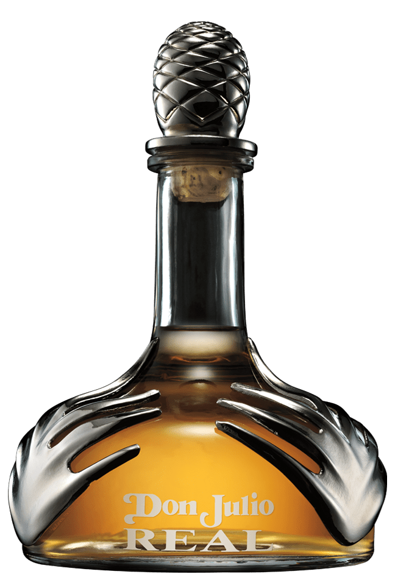

Tequila Real
El máximo exponente del agave de los Altos, añejado durante tres a cinco años en barriles de roble blanco americano, es el tequila Don Julio REAL®, la joya de la corona de la casa Don Julio.
Como uno de los pocos tequilas Extra-Añejos disponibles en el mercado hoy en día, el tequila Don Julio REAL® se reconoce por ser uno de los mejores. Con un sabor que solo puede describirse como exquisito, sus ricos aromas y su carácter increíblemente suave y sofisticado, hacen de este tequila, único en su tipo, la elección perfecta para celebrar los momentos más importantes de la vida.
